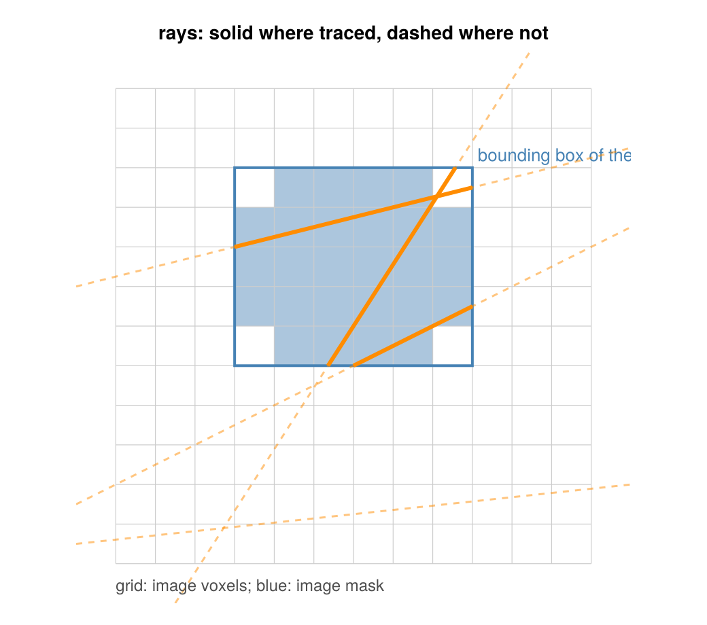

Masks
A mask removes voxels or rays from the problem. This page explains what a projector with masks computes, why it stays the exact adjoint, where it saves time, and how operators of other packages take part. Use Masks shows how to set the masks.
using CTOperatorsclip_segment (generic function with 1 method)What a mask means
A mask is a Bool array: true means "used", false means "masked" (excluded). The image mask (the mask of the ImageGeom) and the ray mask (the keyword raymask) are diagonal matrices with 0 and 1 on the diagonal, $M_\text{image}$ and $M_\text{rays}$. A projector $A$ with masks computes
\[y = M_\text{rays} \, A \, M_\text{image} \, x, \qquad x = M_\text{image} \, A^T M_\text{rays} \, y\]
for the forward and the back projection. Since the masks are diagonal, the second is the transpose of the first: the pair stays exactly adjoint, as iterative solvers and automatic differentiation need. It is the same as removing the masked columns (voxels) and rows (rays) from the system matrix, except that images and data keep their full shape, with zeros at the masked entries.
For a solver this means: masked voxels are not unknowns (they stay zero), and masked rays are not measurements (their values do not matter). The row and column sums, the normalizations of SART and OS-EM, are those of the masked matrix.
Where masks save time
A projector that applied the masks only by multiplying would compute everything and then throw parts away. The projectors of this package use the masks to compute less:
- Masked rays are not traced. The kernel checks the ray mask before it sets up a ray: a masked ray writes 0 in the forward projection and returns at once in the back projection. With 20 % of the rays masked, the back projection got 17 to 20 % faster and the forward projection 4 to 14 % (256³ volume, AMD Radeon RX 7900 XT).
- Rays are clipped to the bounding box of the image mask. Every ray is clipped to a box before it is traced; without a mask the box is the volume, with a mask it is the smallest box that contains the mask (for Joseph widened by half a voxel across the ray, for the interpolation). Outside the box the image is zero, so nothing is lost. In the figure, rays are solid where they are traced and dashed where they are not; the bottom ray misses the box and is not traced at all:

For a small region of interest this saves most of the work: a centered mask of 64³ voxels in a 256³ volume, on the same GPU, made the projections 30 to 43 times faster in our benchmarks. The circular field of view (MaskCircle) fills its bounding box, the whole square, and gains nothing.
Inside the box, masked voxels are still visited, as by the top ray in the figure, which crosses a corner of the box outside the ellipse: the forward projection reads the image multiplied by the mask, and the back projection writes them and sets them to zero afterwards.
Masks for every operator
The masks are applied in the generic layer of the operators (mul!, which calls the operator's forward! and backward!), so every operator gets the semantics above, also one implemented outside this package (see Write a Projector):
CTOperators.image_mask(op)andCTOperators.ray_mask(op)return the masks ofopon its device, ornothing. A subtype ofAbstractProjectorfrom another package has the mask of itsImageGeomand no ray mask (there is no way to give it one from outside); other operators have no masks.CTOperators.handles_raymask(op)states whetheropapplies its ray mask itself, as the projectors of this package do in their kernels. If it does not, the generic layer multiplies the data by the ray mask.
A projector of another package that ignores masks is therefore still correct; it only computes the masked parts. Write a Projector shows how a projector uses the masks itself.
This page was generated using Literate.jl.